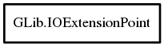

IOExtensionPoint
Object Hierarchy:

Description:
[ Compact ]
public class IOExtensionPoint
Content:
Constants:
Static methods:
- public static unowned IOExtension implement (string extension_point_name, Type type, string extension_name, int priority)
Registers type as extension for the extension point with
name extension_point_name.
- public static unowned IOExtensionPoint lookup (string name)
Looks up an existing extension point.
- public static unowned IOExtensionPoint register (string name)
Registers an extension point.
Methods: